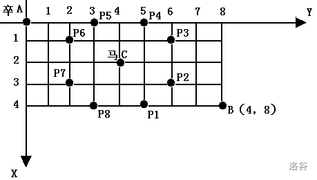
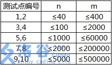

https://www.luogu.com.cn/training/5011
有一个箱子容量为
现在从
第一行共一个整数
第二行共一个整数
接下来
共一行一个整数，表示箱子最小剩余空间。
124263843512677987
xxxxxxxxxx110
对于
【题目来源】
NOIP 2001 普及组第四题
x1
3using namespace std;4
5const int N = 35, M = 20010;6int f[M], n, m, v[N];7
8int main() {9 cin >> m >> n;10 for (int i = 1; i <= n; ++i) cin >> v[i];11
12 for (int i = 1; i <= n; ++i)13 for (int j = m; j >= v[i]; --j) f[j] = max(f[j], f[j - v[i]] + v[i]);14
15 cout << m - f[m];16 return 0;17}
辰辰是个天资聪颖的孩子，他的梦想是成为世界上最伟大的医师。为此，他想拜附近最有威望的医师为师。医师为了判断他的资质，给他出了一个难题。医师把他带到一个到处都是草药的山洞里对他说：“孩子，这个山洞里有一些不同的草药，采每一株都需要一些时间，每一株也有它自身的价值。我会给你一段时间，在这段时间里，你可以采到一些草药。如果你是一个聪明的孩子，你应该可以让采到的草药的总价值最大。”
如果你是辰辰，你能完成这个任务吗？
第一行有
接下来的
输出在规定的时间内可以采到的草药的最大总价值。
xxxxxxxxxx4170 3271 100369 141 2
xxxxxxxxxx113
【数据范围】
对于
对于全部的数据，
【题目来源】
NOIP 2005 普及组第三题
xxxxxxxxxx241
3using namespace std;4typedef long long int LL;5const int M = 110, T = 1010;6
7int v[M], w[M];8int m, t;9int f[T];10
11int main() {12 cin >> t >> m;13
14 for (int i = 1; i <= m; ++i) {15 cin >> v[i] >> w[i];16 }17
18 for (int i = 1; i <= m; ++i)19 for (int j = t; j >= v[i]; --j)20 f[j] = max(f[j], f[j - v[i]] + w[i]);21
22 cout << f[t];23 return 0;24}
上体育课的时候，小蛮的老师经常带着同学们一起做游戏。这次，老师带着同学们一起做传球游戏。
游戏规则是这样的：
聪明的小蛮提出一个有趣的问题：有多少种不同的传球方法可以使得从小蛮手里开始传的球，传了
一行，有两个用空格隔开的整数
xxxxxxxxxx113 3
xxxxxxxxxx112
40%的数据满足：
100%的数据满足：
2008普及组第三题
xxxxxxxxxx241
3using namespace std;4const int N = 35;5int n, m;6long long int f[N][N];7
8int main() {9 cin >> n >> m;10 f[0][1] = 1;11
12 for (int i = 1; i <= m; ++i) {13 for (int j = 1; j <= n; ++j) {14 long long int &v = f[i][j];15 if (j - 1 >= 1) v += f[i - 1][j - 1];16 else v += f[i - 1][n];17 if (j + 1 <= n) v += f[i - 1][j + 1];18 else v += f[i - 1][1];19 }20 }21
22 cout << f[m][1];23 return 0;24}
小明的花店新开张，为了吸引顾客，他想在花店的门口摆上一排花，共
试编程计算，一共有多少种不同的摆花方案。
第一行包含两个正整数
第二行有
一个整数，表示有多少种方案。注意：因为方案数可能很多，请输出方案数对
xxxxxxxxxx212 423 2
xxxxxxxxxx112
【数据范围】
对于
对于
对于
NOIP 2012 普及组 第三题
xxxxxxxxxx191
3using namespace std;4const int N = 110, mod = 1e6 + 7;5int n, m, f[N][N], s[N];6
7int main() {8 cin >> n >> m;9 for (int i = 1; i <= n; ++i) cin >> s[i];10
11 f[0][0] = 1;12 for (int i = 1; i <= n; ++i)13 for (int j = 0; j <= m; ++j)14 for (int k = 0; k <= min(s[i], j); ++k)15 f[i][j] = (f[i][j] + f[i - 1][j - k]) % mod;16
17 cout << f[n][m];18 return 0;19}
四方定理是众所周知的：任意一个正整数
第一行为正整数
对于每个正整数
xxxxxxxxxx21122003
xxxxxxxxxx1148
xxxxxxxxxx261
3using namespace std;4const int N = 33000;5int n, t;6int f[5][N];7
8int main() {9 cin >> t;10
11 f[0][0] = 1;12 for (int i = 1; i * i < N; ++i) {13 for (int s = 1; s <= 4; ++s) {14 for (int j = i * i; j < N; ++j)15 f[s][j] += f[s - 1][j - i * i];16 }17 }18
19 while (t--) {20 cin >> n;21 int res = 0;22 for (int i = 1; i <= 4; ++i) res += f[i][n];23 cout << res << endl;24 }25 return 0;26}
棋盘上
棋盘用坐标表示，

现在要求你计算出卒从
一行四个正整数，分别表示
一个整数，表示所有的路径条数。
xxxxxxxxxx116 6 3 3
xxxxxxxxxx116
对于
【题目来源】
NOIP 2002 普及组第四题
xxxxxxxxxx541
3using namespace std;4typedef long long int LL;5const int N = 24;6
7bool st[N][N];8LL f[N];9int n, m;10
11void del(int a, int b) {12 st[a][b] = true;13 int dx[8] = {-2, -1, 1, 2, -2, -1, 1, 2};14 int dy[8] = {1, 2, 2, 1, -1, -2, -2, -1};15
16 for (int i = 0; i < 8; ++i) {17 int x = a + dx[i], y = b + dy[i];18 if (x < 0 || y < 0 || x > n || y > m) continue;19 st[x][y] = true;20 }21}22
23int main() {24 cin >> n >> m;25
26 int x, y;27 cin >> x >> y;28 del(x, y);29
30
31 f[0] = 1;32 for (int i = 0; i <= n; ++i) {33 for (int j = 0; j <= m; ++j) {34 if (i == 0 && j == 0) {35 continue;36 }37 if (st[i][j]) {38 f[j] = 0;39 continue;40 }41 if (i == 0) {42 f[j] = f[j - 1];43 continue;44 }45 if (j == 0) {46 f[j] = f[j];47 continue;48 }49 f[j] = f[j] + f[j - 1];50 }51 }52 cout << f[m];53 return 0;54}
在一个
输入文件第一行为两个整数
一个整数，最大正方形的边长。
xxxxxxxxxx514 420 1 1 131 1 1 040 1 1 051 1 0 1
xxxxxxxxxx112
xxxxxxxxxx231
3using namespace std;4const int N = 110;5int n, f[N][N], a[N][N], m;6
7int main() {8 cin >> n >> m;9 for (int i = 1; i <= n; ++i)10 for (int j = 1; j <= m; ++j)11 cin >> a[i][j];12
13 int res = 0;14 for (int i = 1; i <= n; ++i)15 for (int j = 1; j <= m; ++j)16 if (a[i][j]) {17 f[i][j] = min(min(f[i - 1][j], f[i][j - 1]), f[i - 1][j - 1]) + 1;18 res = max(res, f[i][j]);// 可以做到同步更新19 }20
21 cout << res;22 return 0;23}
此题为纪念 LiYuxiang 而生。
LiYuxiang 是个天资聪颖的孩子，他的梦想是成为世界上最伟大的医师。为此，他想拜附近最有威望的医师为师。医师为了判断他的资质，给他出了一个难题。医师把他带到一个到处都是草药的山洞里对他说：“孩子，这个山洞里有一些不同种类的草药，采每一种都需要一些时间，每一种也有它自身的价值。我会给你一段时间，在这段时间里，你可以采到一些草药。如果你是一个聪明的孩子，你应该可以让采到的草药的总价值最大。”
如果你是 LiYuxiang，你能完成这个任务吗？
此题和原题的不同点：
输入第一行有两个整数，分别代表总共能够用来采药的时间
第
输出一行，这一行只包含一个整数，表示在规定的时间内，可以采到的草药的最大总价值。
xxxxxxxxxx4170 3271 100369 141 2
xxxxxxxxxx11140
对于
对于
xxxxxxxxxx211
3using namespace std;4
5const int N = 1e4 + 10;6const int M = 1e7 + 10;7
8int v[N], w[N];9long long int f[M], n, m;10
11int main() {12 cin >> m >> n;13 for (int i = 1; i <= n; ++i) cin >> v[i] >> w[i];14
15 for (int i = 1; i <= n; i++)16 for (int j = v[i]; j <= m; j++)17 f[j] = max(f[j], f[j - v[i]] + w[i]);18
19 cout << f[m];20 return 0;21}
题目名称是吸引你点进来的。
实际上该题还是很水的。
哥德巴赫猜想 似乎已呈泛滥趋势。
以上纯属个人吐槽
给定一个正整数
一行一个正整数
一行一个整数表示方案总数。
xxxxxxxxxx117
xxxxxxxxxx113
xxxxxxxxxx1120
xxxxxxxxxx1126
存在如下三种方案：
对于
对于
xxxxxxxxxx271
3using namespace std;4
5const int N = 1010;6int n, cnt, v[N];7long long int f[N];8
9bool check(int x) {10 for (int i = 2; i * i <= x; ++i)11 if (x % i == 0) return false;12 return true;13}14
15int main() {16 cin >> n;17
18 for (int i = 2; i <= n; i++)19 if (check(i)) v[++cnt] = i;20
21 f[0] = 1;22 for (int i = 1; i <= cnt; ++i)23 for (int j = v[i]; j <= n; ++j)24 f[j] += f[j - v[i]];25 cout << f[n];26 return 0;27}完全背包问题
选取和不超过
输入一个正整数
输出最大的约数之和。
xxxxxxxxxx1111
xxxxxxxxxx119
【样例说明】
取数字
【数据规模】
对于
xxxxxxxxxx271
3using namespace std;4
5const int N = 1010;6int n, a[N], f[N][N];7
8int main() {9 cin >> n;10 for (int i = 2; i <= n; ++i) {11 int res = 0;12 int s = 1;13 while (s <= i / 2) {14 if (i % s == 0) res += s;15 s++;16 }17 a[i] = res;18 }19 for (int i = 1; i <= n; ++i) {20 for (int s = 1; s <= n; ++s) {21 f[i][s] = f[i - 1][s];22 if (s - i >= 0) f[i][s] = max(f[i][s], f[i - 1][s - i] + a[i]);23 }24 }25 cout << f[n][n];26 return 0;27} 本质是01背包问题，可以优化成一维数组
xxxxxxxxxx261
3using namespace std;4
5const int N = 1010;6int n, a[N], f[N];7
8int main() {9 cin >> n;10 for (int i = 2; i <= n; ++i) {11 int res = 0;12 int s = 1;13 while (s <= i / 2) {14 if (i % s == 0) res += s;15 s++;16 }17 a[i] = res;18 }19 for (int i = 1; i <= n; ++i) {20 for (int s = n; s >= i; --s) {21 f[s] = max(f[s], f[s - i] + a[i]);22 }23 }24 cout << f[n];25 return 0;26} 遇到动态规划题要抽象成已经学过的动态规划模型，比如常见的背包问题
Bessie has gone to the mall's jewelry store and spies a charm bracelet. Of course, she'd like to fill it with the best charms possible from the N (1 ≤ N ≤ 3,402) available charms. Each charm i in the supplied list has a weight Wi (1 ≤ Wi ≤ 400), a 'desirability' factor Di (1 ≤ Di ≤ 100), and can be used at most once. Bessie can only support a charm bracelet whose weight is no more than M (1 ≤ M ≤ 12,880).
Given that weight limit as a constraint and a list of the charms with their weights and desirability rating, deduce the maximum possible sum of ratings.
有
* Line 1: Two space-separated integers: N and M
* Lines 2..N+1: Line i+1 describes charm i with two space-separated integers: Wi and Di
第一行：物品个数
第二行至第
* Line 1: A single integer that is the greatest sum of charm desirabilities that can be achieved given the weight constraints
输出一行最大价值。
xxxxxxxxxx514 621 432 643 1252 7
xxxxxxxxxx1123
xxxxxxxxxx181
3using namespace std;4const int N = 3450, M = 13000;5int n, m, v[N], w[N];6int f[M];7
8int main() {9 cin >> n >> m;10 for (int i = 1; i <= n; ++i) cin >> v[i] >> w[i];11
12 for (int i = 1; i <= n; ++i)13 for (int j = m; j >= v[i]; --j)14 f[j] = max(f[j], f[j - v[i]] + w[i]);15
16 cout << f[m];17 return 0;18}本质是01背包问题
Bessie 像她的诸多姊妹一样，因为从 Farmer John 的草地吃了太多美味的草而长出了太多的赘肉。所以 FJ 将她置于一个及其严格的节食计划之中。她每天不能吃多过
第一行有两个由空格隔开的整数
第
第一行一个单独的整数表示 Bessie 在限制范围内最多可以吃多少公斤的干草。
xxxxxxxxxx5156 4215319420521
xxxxxxxxxx1156
有四捆草，重量分别是
Bessie 可以吃
xxxxxxxxxx181
3using namespace std;4const int N = 550, M = 45010;5int n, m, v[N];6int f[M];7
8int main() {9 cin >> m >> n;10 for (int i = 1; i <= n; ++i) cin >> v[i];11
12 for (int i = 1; i <= n; ++i)13 for (int j = m; j >= v[i]; --j)14 f[j] = max(f[j], f[j - v[i]] + v[i]);15
16 cout << f[m];17 return 0;18}
给出一个长度为
第一行是一个整数，表示序列的长度
第二行有
输出一行一个整数表示答案。
xxxxxxxxxx21722 -4 3 -1 2 -4 3
xxxxxxxxxx114
选取
对于
对于
xxxxxxxxxx171
3using namespace std;4int n, temp;5int sum, maxsum = INT_MIN;6
7int main() {8 cin >> n;9 while (n--) {10 scanf("%d", &temp);11 sum += temp;12 maxsum = maxsum > sum ? maxsum : sum;13 if (sum < 0)sum = 0;14 }15 cout << maxsum;16 return 0;17}
观察下面的数字金字塔。
写一个程序来查找从最高点到底部任意处结束的路径，使路径经过数字的和最大。每一步可以走到左下方的点也可以到达右下方的点。
xxxxxxxxxx51 7 2 3 8 3 8 1 0 4 2 7 4 4 54 5 2 6 5 在上面的样例中,从
第一个行一个正整数
后面每行为这个数字金字塔特定行包含的整数。
单独的一行,包含那个可能得到的最大的和。
xxxxxxxxxx6152733 848 1 052 7 4 464 5 2 6 5
xxxxxxxxxx1130
【数据范围】
对于
题目翻译来自NOCOW。
USACO Training Section 1.5
IOI1994 Day1T1
xxxxxxxxxx321
3using namespace std;4
5const int N = 1010;6const int INF = 1e9;7
8int a[N][N];9int f[N][N];10int n;11
12int main() {13 cin >> n;14 for (int i = 0; i <= n; ++i)15 for (int j = 0; j <= i + 1; j++)16 f[i][j] = -INF;17
18 for (int i = 1; i <= n; ++i)19 for (int j = 1; j <= i; ++j)20 scanf("%d", &a[i][j]);21
22 f[1][1] = a[1][1];23 for (int i = 2; i <= n; ++i)24 for (int j = 1; j <= i; ++j)25 f[i][j] = max(f[i - 1][j - 1], f[i - 1][j]) + a[i][j];26
27 int res = -INF;28 for (int i = 1; i <= n; ++i) res = max(res, f[n][i]);29
30 cout << res;31 return 0;32}
输入长度为
连号指在序列中，从小到大的连续自然数。
第一行，一个整数
第二行，
一个数，最长连号的个数。
xxxxxxxxxx211021 5 6 2 3 4 5 6 8 9
xxxxxxxxxx115
对于
xxxxxxxxxx231
3using namespace std;4
5int main() {6 long long int last, now, sum = 1, temp = 1;7 int n;8 cin >> n >> last;9 for (int i = 0; i < n - 1; ++i) {10 scanf("%lld", &now);11 if (last + 1 == now) {12 temp++;13 if (temp > sum) {14 sum = temp;15 }16 } else {17 temp = 1;18 }19 last = now;20 }21 cout << sum;22 return 0;23}
你知道食物链吗？Delia 生物考试的时候，数食物链条数的题目全都错了，因为她总是重复数了几条或漏掉了几条。于是她来就来求助你，然而你也不会啊！写一个程序来帮帮她吧。
给你一个食物网，你要求出这个食物网中最大食物链的数量。
（这里的“最大食物链”，指的是生物学意义上的食物链，即最左端是不会捕食其他生物的生产者，最右端是不会被其他生物捕食的消费者。）
Delia 非常急，所以你只有
由于这个结果可能过大，你只需要输出总数模上
第一行，两个正整数
接下来
一行一个整数，为最大食物链数量模上
xxxxxxxxxx815 721 231 342 353 562 574 583 4
xxxxxxxxxx115
各测试点满足以下约定：

【补充说明】
数据中不会出现环，满足生物学的要求。（感谢 @AKEE ）
xxxxxxxxxx551
3using namespace std;4const int N = 5010;5const int M = 5e5 + 10;6const int mod = 80112002;7
8int s[N], n, m;9int h[N], e[M], ne[M], idx;10int rudu[N], chudu[N];11
12void add(int a, int b) {13 e[idx] = b;14 ne[idx] = h[a];15 h[a] = idx++;16}17
18int main() {19 memset(h, -1, sizeof h);20
21 scanf("%d%d", &n, &m);22
23 for (int i = 0; i < m; i++) {24 int a, b;25 scanf("%d%d", &a, &b);26 rudu[b]++;27 chudu[a]++;28 add(a, b);29 }30
31 queue<int> q;32 for (int i = 1; i <= n; i++)33 if (rudu[i] == 0) {34 q.push(i);35 s[i] = 1;36 }37
38 int ans = 0;39 while (q.size()) {40 int t = q.front();41 q.pop();42
43 for (int i = h[t]; i != -1; i = ne[i]) {44 int j = e[i];45 s[j] = (s[j] + s[t]) % mod;46 rudu[j]--;47 if (rudu[j] == 0) {48 if (chudu[j] == 0) ans = (ans + s[j]) % mod;49 else q.push(j);50 }51 }52 }53 cout << ans;54 return 0;55}